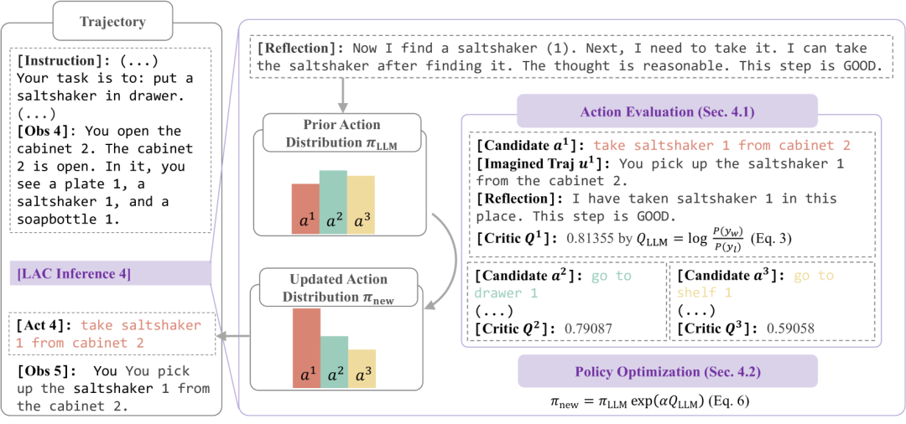
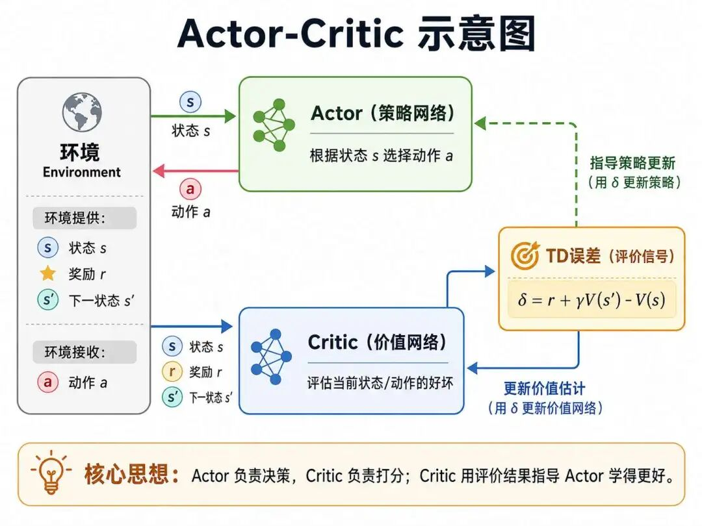

“我们不能因为一台机器不能参加选美大赛而责备它，就像我们不能因为一个人没有飞机跑得快就责备他一样，机器也能够思维。”——人工智能先驱艾伦图灵
自上世纪八十年代强化学习理论体系建立以来，其方法主要分为两类：基于价值的算法和基于策略的算法。
基于价值的算法（如Q-learning）通过估计状态-动作价值函数间接指导策略，虽在离散空间中高效稳定，却因依赖动作空间遍历而难以适应连续控制问题；
而基于策略的算法，比如我们刚学习完的REINFORCE，虽然可以直接输出连续动作、灵活性强，却因蒙特卡洛估计的高方差与低样本效率，导致训练波动大、收敛缓慢。
具体来看，REINFORCE采用蒙特卡洛方法，存在以下问题：
1）高方差(High Variance)
首先是高方差问题，REINFORCE依赖完整轨迹的蒙特卡洛回报 $G_t$ 计算梯度，而 $G_t$ 受随机轨迹影响波动大，导致梯度估计不稳定，收敛缓慢。
2）样本效率低(Low Sample Efficiency)
其次是REINFORCE的样本使用效率低，需采样完整回合(episode)后才能更新，这种需等待回合结束才能更新策略的方法，无法在线学习。
这种对立暴露了强化学习的根本矛盾：策略优化的灵活性需以稳定性为代价，而价值估计的高效性又以动作空间受限为前提。
那有没有一种方法，鱼与熊掌皆可兼得呢？这就是我们本讲将要介绍的一种新算法架构：Actor-Critic算法。
Actor-Critic的创新之举在于其协同了Actor和Critic两个网络结构，其中Actor（策略网络）直接生成动作以支持连续控制，而Critic（价值网络）则通过时序差分算法学习实时评估动作价值，以低方差梯度引导策略更新。
这一框架不仅继承了策略梯度的动作泛化能力，还引入价值估计的稳定性，成为复杂控制任务（如机器人运动控制、自动驾驶）的主流解决方案。
Actor-Critic架构最早由Witten在1977年提出雏形。随后，Barto、Sutton和Anderson在1983年正式确立了Actor-Critic框架，将其分为两部分：

Actor是策略网络(Policy Network)，负责根据当前状态生成动作，并与环境交互。其核心任务是优化策略函数 $π_\theta(a|s)$，输出动作的概率分布（离散动作）或连续动作值（如高斯分布均值）。
Critic是价值网络(Value Network)，负责评估状态或动作的价值，为Actor提供反馈信号。其核心任务是学习价值函数 $V(s)$ 或 $Q(s,a)$，衡量长期累积奖励的期望。
你可以这样形象的理解Actor和Critic的关系，Actor 为“手”，执行具体动作；Critic 为“眼”，评估动作价值；TD误差 为“神经信号”，传递评估结果，从而驱动策略的改进。
| 组件 | 功能 | 数学表达 | 优化目标 |
|---|---|---|---|
| Actor（策略网络） | 根据状态生成动作概率分布，执行探索（如：向左/右推小车） | $\pi_\theta(a\|s)$，参数：$\theta$ | 最大化累积奖励：$\nabla_\theta J(\theta) = \mathbb{E}[\nabla_\theta \log \pi_\theta(a\|s) \cdot \delta]$ |
| Critic（价值网络） | 评估状态价值，计算TD误差指导Actor（如：判断当前动作的长期收益） | $V_w(s)$，参数：$w$ | 最小化TD误差：$L(w) = \mathbb{E}[(r + \gamma V_w(s') - V_w(s))^2]$ |
REINFORCE作为策略梯度算法的代表，其核心是通过蒙特卡洛回报 $G_t$ 优化策略：
$$ \nabla_\theta J(\theta) = \mathbb{E} \left[ \nabla_\theta \log \pi_\theta(a|s) \cdot G_t \right] $$注释版：
$$ \underbrace{\nabla_\theta J(\theta)}_{\text{策略梯度}} = \underbrace{\mathbb{E}}_{\text{轨迹期望均值}} \left[ \underbrace{\nabla_\theta \log \pi_\theta(a|s)}_{\text{对数策略概率梯度}} \cdot \underbrace{G_t}_{\text{时序累计回报}} \right] $$其中 $G_t$ 是从时刻 $t$ 开始的累积折扣奖励。这种基于蒙特卡洛方法的缺点是：
Actor-Critic保留REINFORCE的策略梯度框架，但用Critic计算的TD误差 $\delta$ 替代 $G_t$ :
$$ \nabla_\theta J(\theta) = \mathbb{E} \left[ \nabla_\theta \log \pi_\theta(a|s) \cdot \delta \right] $$其中 $\delta$ 由Critic提供，替代蒙特卡洛回报 $G_t$，显著降低方差。
这里简单回顾一下TD差分算法公式，TD算法通过自举更新价值函数，支持单步更新：
$$ V(s) \leftarrow V(s) + \alpha \left[ r + \gamma V(s') - V(s) \right] $$其中 $r + \gamma V(s')$ 称为TD目标， $\delta = r + \gamma V(s') - V(s)$ 是TD误差。
而Critic沿用TD算法的更新机制，但目标变为提供梯度信号指导Actor，其损失函数为：最小化TD误差的均方误差：
$$ L(w) = \mathbb{E} \left[ \left( r + \gamma V_w(s') - V_w(s) \right)^2 \right] $$Critic为Actor提供低方差更新信号 $\delta$ ，通过价值网络 $V_w(s)$ 泛化状态价值评估，无需像Q-learning那样在动作空间上执行 $\max$ 操作，因而天然适用于连续动作场景。
$$ L(w) = \mathbb{E}_{(s,r,s') \sim \pi} \left[ \left( \underbrace{r + \gamma V_w(s')}_{\text{TD目标}} - \underbrace{V_w(s)}_{\text{预测值}} \right)^2 \right] $$注释版：
$$ L(参数) = \mathbb{E}_{(状态,奖励,新状态) \sim 策略} \left[ \left( \underbrace{奖励 + 折扣系数 \cdot V_{参数}(新状态)}_{\text{TD目标}} - \underbrace{V_{参数}(状态)}_{\text{预测值}} \right)^2 \right] $$意义：最小化 $L(w)$ 迫使Critic逼近真实状态价值函数 $V^\pi(s)$，使TD误差 $\delta$ 趋近于零。
Actor-Critic的更新规则可视为策略梯度与时序差分的乘积：
$$ \underbrace{\nabla_\theta J(\theta)}_{\text{Actor}} = \mathbb{E} \left[ \underbrace{\nabla_\theta \log \pi_\theta(a|s)}_{\text{REINFORCE框架}} \cdot \underbrace{\delta}_{\text{TD算法}} \right] $$总的公式演进图示:$\underbrace{\nabla_\theta J(\theta) = \mathbb{E}[\cdots G_t]}_{\text{REINFORCE}} \xrightarrow{\text{用 }\delta\text{ 替代 }G_t} \underbrace{\nabla_\theta J(\theta) = \mathbb{E}[\cdots \delta]}_{\text{Actor-Critic}} \xleftarrow{\delta\text{ 来自}} \underbrace{V(s) \leftarrow V(s) + \alpha \delta}_{\text{TD算法}}$
Actor-Critic通过引入TD差分算法完成了策略梯度算法的改造，接下来的运用流程就和我们上篇提到的策略梯度算法的一般使用流程一样了。

Actor的策略参数更新基于策略梯度定理，具体形式为：
$$ \theta \leftarrow \theta + \alpha_\theta \cdot \delta \cdot \nabla_\theta \log \pi_\theta(a|s) $$其中：
TD驱动策略更新： Critic通过时序差分学习评估状态价值，生成低方差信号：
$$ \delta = r + \gamma V_w(s') - V_w(s) $$$δ$ 用于量化实际奖励($r + \gamma V_w(s')$)与预期价值($V_w(s)$)的偏差。 （1）若 $δ$ > 0，表明动作收益高于预期，增大动作a的概率，沿 $∇θ log π(a|s)$ 方向更新； （2）若 $δ$ < 0，表明动作收益低于预期，减小动作a的概率，沿 $∇θ log π(a|s)$ 反方向更新；
# Actor-Critic
# Actor + Critic
# env state_dim action_dim
# Actor Critic
# 1
初始化：
Actor策略网络 π_θ:
输入：状态 s（维度 = state_dim）
输出：动作概率分布 prob = [p(a₁|s), p(a₂|s), ...] # 离散动作用 Softmax，连续动作用高斯分布
参数：θ
Critic价值网络 V_w:
输入：状态 s（维度 = state_dim）
输出：状态价值标量 V(s) # 评估当前状态的长期收益期望
参数：w
超参数：
折扣因子 γ = 0.99 # 未来奖励衰减系数
Actor学习率 α_θ = 0.001
Critic学习率 α_w = 0.01
# 2
for episode in range(最大训练轮次):
初始化环境，获得初始状态 s
done = False # 回合结束标志
while not done:
# 2.1 Actor选择动作
根据当前策略 π_θ(s) 采样动作 a ∼ π_θ(·|s) # 依概率选择动作，保留梯度
# 2.2 执行动作并观察环境反馈
执行动作 a，获得奖励 r 和下一状态 s'，以及终止标志 done
# 2.3 Critic评估状态价值
V_s = V_w(s) # 当前状态价值估计
V_s_next = V_w(s') if not done else 0 # 终止状态价值为 0
# 2.4 计算TD误差（核心信号）
δ = r + γ * V_s_next - V_s # TD误差 = 实际奖励 + 未来价值估计 - 当前价值估计
# 2.5 Critic更新：最小化价值估计误差
Critic损失函数 L_w = δ² / 2 # 均方误差的简化形式
计算梯度 ∇_w L_w = δ · ∇_w V_w(s) # 注意：梯度方向与 δ 符号相关
更新Critic参数：w ← w + α_w · δ · ∇_w V_w(s) # 梯度上升减小误差
# 2.6 Actor更新：策略提升
计算对数概率梯度 ∇_θ log π_θ(a|s) # 指示如何增加动作 a 的概率
更新Actor参数：θ ← θ + α_θ · δ · ∇_θ log π_θ(a|s)
# 解释：若 δ>0（动作优于预期），则提升 a 的概率；反之降低
# 2.7 状态转移
s = s' # 移动到下一状态
# 3
# 1CriticTD δ REINFORCE G_t
# 2Actor∇J(θ) = E[∇logπ(a|s)·δ]
# 3Actor μ σ
# 4 β·H(π)TD自举的方式可以很大程度上解决蒙特卡洛方法带来的方差过大的问题，但TD误差 $\delta$ 本身仍存在一个隐患——缺少合理的基线参照。
例如，智能体在环境中执行的所有动作奖励为正（如未探索动作未被惩罚），策略会盲目提升已采样动作的概率，陷入次优策略。
为了解决这个问题，Actor-Critic算法引入了优势函数，它用于量化特定动作相对于策略平均表现的优劣程度，通过减去状态价值这一“基线”，让梯度估计的方差进一步降低，也避免了上述盲目提升的陷阱。其定义为：
$$ \underbrace{A^{\pi}(s, a)}_{\text{优势函数}} = \underbrace{Q^{\pi}(s, a)}_{\text{动作价值函数}} - \underbrace{V^{\pi}(s)}_{\text{状态价值函数}} $$不知道大家看到这个公式作何感想，这不就是贝尔曼方程两种形式的综合运用的又一体现吗？
可以理解为状态价值函数预先评估价值多少，然后实际执行动作之后，看看能否高于状态价值函数预估的价值。
其中，$Q^π(s, a)$ 是动作价值函数，即执行动作 a 的预期回报，$V^π(s)$ 是状态价值函数（策略 $π$ 的平均预期回报），即预先评估当前状态 $s$ 在策略 $π$ 下的平均期望回报，即“基准线”。
$$ \delta_t = r_t + \gamma V(s_{t+1}) - V(s_t) \implies A(s_t, a_t) \approx \delta_t $$A(s,a)代替δ之后，策略梯度函数则变为：
$$ \nabla_\theta J(\theta) = \mathbb{E} \left[ \nabla_\theta \log \pi_\theta(a_t|s_t) \cdot A(s_t, a_t) \right] $$A(s,a)>0 时，动作优于平均，提升其概率；A(s,a)<0 时，动作劣于平均，降低其概率；
以上通过引入优势函数之后的Actor-Critic算法，又称之为A2C(Advantage Actor-Critic)算法。
A3C(Asynchronous Advantage Actor-Critic)是深度强化学习中的一种高效算法，由DeepMind于2016年提出。A3C通过异步多线程训练结合Actor-Critic框架和优势函数，显著提升了训练效率和稳定性。
值得一提的是，A2C和A3C的关系常常被混淆。其实A2C既可以指带优势函数的标准Actor-Critic算法，也专门指A3C的同步版本——也就是让多个worker采样完成后统一更新参数，而不是各自异步地更新。实践中A2C训练更稳定，效果与A3C相当甚至更好，因此后来反而更为流行。
多线程的概念对于没有编程经验的人来说比较难以理解，下面举个生活中的案例来说明。
想象你在学打篮球投篮🏀，目标是投得又准又快。传统方法是你一个人反复练习（单线程学习），效率低还容易陷入错误姿势。而A3C的做法是：
这就是A3C的核心理念：多人异步训练 + 经验共享，大幅提升学习效率。
每个“队友”（线程）内部有两大脑：
就像你投篮时，身体执行动作(Actor)，大脑判断效果(Critic)。
💡 关键点：队友们不用互相等待，谁先练完谁先汇报，避免“排队等教练”的浪费时间！
为什么有的投篮该鼓励？有的要避免？用优势函数量化，优势函数就是动作评分卡
例如：
A3C就像多线程学习小组：分工协作（Actor执行 + Critic评价）、异步交作业（谁先算完谁更新）、动态评分（优势函数淘汰烂动作）、共享智慧（全局网络整合最优解）
回过头来看，Actor-Critic 的精妙之处在于它没有在"基于价值"与"基于策略"两条路线中二选一，而是让二者各司其职、相互成全。
Actor 作为策略网络直接输出动作，保留了应对连续控制的灵活性；Critic 作为价值网络实时评估状态价值，用一个低方差的时序差分误差 δ 取代了 REINFORCE 中必须等到回合结束才能算出的蒙特卡洛回报 $G_t$。
这一替换看似只是把"整条轨迹的累积奖励"换成了"单步的预期偏差"，却同时解决了高方差与更新延迟两大顽疾：Actor 负责"动手",Critic 负责"长眼"，δ 则像神经信号一样在两者之间传递评价，让智能体得以边走边学、稳步收敛。
而从 Actor-Critic 到 A2C、再到 A3C 的演进，则是一条不断"减噪"与"提速"的主线。引入优势函数 A(s,a) = Q(s,a) − V(s)，相当于为每个动作减去一条"基线"，让策略只关注动作相对于平均水平的好坏，进一步压低了梯度方差，也避免了奖励恒为正时策略盲目抬高已采样动作的陷阱；
A3C 则借助多 worker 并行与异步更新，把训练效率推上新台阶，而它的同步版本 A2C 又以更稳定的表现广为采用。
至此，策略梯度算法终于在灵活性与稳定性之间找到了那个一直追寻的平衡点——这也正是它能成为机器人控制、自动驾驶等复杂任务主流方案的根本原因。
Actor-Critic 解决了方差与更新延迟的问题，但“步子迈多大”依然是个难题——步长太大容易训练崩溃，太小又收敛缓慢。下一篇我们就来看看 TRPO 是如何用“信任区域”为策略更新划出安全边界，让每一步都走得更稳的。
Actor-Critic 架构（Actor-Critic Architecture） 融合"基于价值"与"基于策略"两类方法的强化学习框架，由负责生成动作的 Actor 与负责评估价值的 Critic 协同构成。它既保留了策略梯度直接输出连续动作的灵活性，又借助价值网络提供的低方差反馈信号，弥补了纯策略方法收敛缓慢的缺陷，是连接"价值"与"策略"两大流派的桥梁。
演员网络（Actor，策略网络） 直接输出动作的策略网络，参数为 θ，学习目标是最大化累积奖励。对离散动作输出概率分布（Softmax），对连续动作输出高斯分布的均值 μ 与方差 σ。它相当于决策系统中的"手"——负责执行具体动作，并通过探索去发现更优的策略。
评论家网络（Critic，价值网络） 负责评估状态价值的网络，参数为 w，通过时序差分学习不断逼近真实价值函数 V(s)。它不直接决策，而是为 Actor 的每一步更新提供"这一步走得好不好"的反馈信号，相当于决策系统中的"眼"。Critic 的引入，正是 Actor-Critic 区别于 REINFORCE 的关键所在。
时序差分误差（TD Error，δ） 定义为 δ = r + γV(s') − V(s)，用于衡量实际回报与价值网络预期之间的偏差。它是贯穿 Actor-Critic 的核心信号：δ>0 表明动作优于预期，应提升其概率；δ<0 则反之。正是用 δ 替代了 REINFORCE 中需等待整条轨迹才能算出的蒙特卡洛回报 G_t，才实现了单步更新与方差的大幅下降。
优势函数（Advantage Function，A） 定义为 A(s,a) = Q(s,a) − V(s)，量化某一动作相对于当前策略平均水平的"超额收益"。通过减去状态价值这一"基线"，它在不改变梯度方向的前提下进一步压低了估计方差，并避免了"所有动作奖励皆为正、策略盲目抬高已采样动作概率"的陷阱。引入优势函数后的 Actor-Critic，即称为 A2C。
优势演员-评论家（A2C，Advantage Actor-Critic） 在 Actor-Critic 基础上以优势函数替代单纯的 TD 误差作为更新权重的算法。它让策略更新只关注动作相对于平均水平的好坏，而非绝对回报的高低，因而梯度方向更纯粹、训练更稳定，是后续众多策略梯度算法的标准范式。
异步优势演员-评论家（A3C，Asynchronous Advantage Actor-Critic） 由 DeepMind 于 2016 年提出，让多个 worker 并行采样、各自异步地更新全局网络，以"多人分工 + 经验共享"的方式大幅提升训练效率。它与 A2C 的核心差异在于参数更新方式，A3C 异步更新，A2C 同步更新；实践中 A2C 往往更稳定，效果亦不逊色。